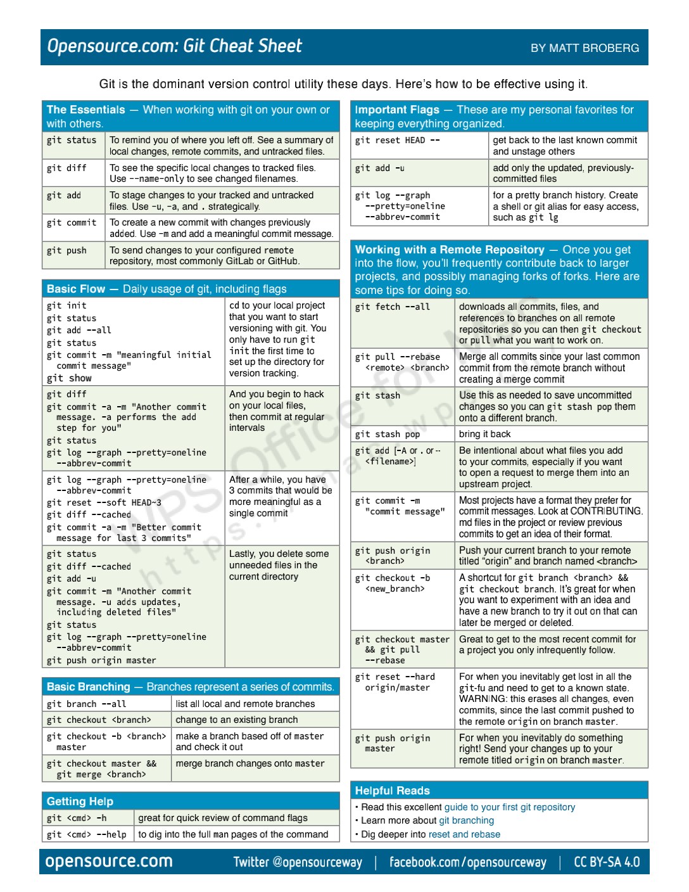

学好
Git的使用，有助于提高生产力。
Git 是一个分布式版本控制软件，最初由林纳斯·托瓦兹创作，于 2005 年以 GPL 发布。最初目的是为更好地管理 Linux 内核开发而设计。
日常使用只要记住
6个命令就可以，但熟练就需要要记住60～100个命令。
- 虽然我很早就开始使用
Git来管理我的代码，但是却一直没有总结。最近正好重新整理自己的开发环境，顺便把对应的知识点梳理成博客文章，供自己参考。
| 编号 | 专用名词 | 对应解释 | 相关命令 |
|---|---|---|---|
| 1 | Workspace |
工作区 | add |
| 2 | Index/Stage |
暂存区 | commit |
| 3 | Repository |
本地仓库 | psuh、checkout |
| 4 | Remote |
远程仓库 | fetch、clone、pull |


1. Git 增删改查
参考来自 => 常用 Git 命令清单
$ cd learngit
$ git init # 初始化Git仓库
** create readme.txt
** echo "line 1 ">> readme.txt
$ git add readme.txt # 添加到暂存空间
$ git commit -m "first commit" # 提交加备注信息
** echo "error line 2" >> readme.txt
$ git add readme.txt
$ git status # 查看状态
** have a change.
$ git reset HEAD readme.txt # 将暂存空间内容撤销
$ git checkout readme.txt # 撤销工作空间内容
** echo "line2" >> readme.txt
$ git add readme.txt
$ git commit -m "commit line 2 "
$ git reset --hard HEAD^ # 回退为上个版本(删除修改)
$ git reset --hard (gitID) # 回退为指定版本(删除修改)
$ git reset --soft (gitID) # 回退为指定版本(不删除回退文件的修改)
$ git log # 查看当前版本及之前版本的id号参考来自 => learn-git-branching
# Git仓库创建
$ git init # 将当前目录设为Git代码库
$ git init [project-name] # 新建并将其设为Git代码库
$ git clone [url] # 通过连接下载一个已有项目
# Git增加文件
$ git add [file1] [file2] # 添加指定文件到暂存区
$ git add [dir] # 添加指定目录到暂存区
$ git add . # 添加当前所有文件到暂存区
$ git add -p # 添加每个变化前都要求确认
# Git删除文件
$ git rm [file1] [file2] # 删除工作区文件并且将这次删除放入暂存区
$ git rm --cached [file] # 停止追踪指定文件但该文件会保留在工作区
$ git mv [file-original] [file-renamed]
# Git代码提交
$ git commit -m [message] # 提交暂存区到仓库区
$ git commit -a # 提交工作区自上次commit之后的变化直接到仓库区
$ git commit -v # 提交时显示所有diff信息
$ git commit --amend -m [message] # 使用一次新的commit替代上一次提交
$ git commit --amend [file1] [file2] # 重做上一次commit并包括指定文件的新变化
# Git撤销操作
$ git checkout . # 恢复暂存区的所有文件到工作区
$ git checkout [file] # 恢复暂存区的指定文件到工作区
$ git checkout [commit] [file] # 恢复某个commit的指定文件到暂存区和工作区
# Git重置操作
$ git reset [file] # 重置暂存区的指定文件；与上一次commit保持一致但工作区不变
$ git reset --hard # 重置暂存区与工作区文件；与上一次commit保持一致；谨慎使用
$ git reset [commit] # 重置当前分支的指针为指定commit；同时重置暂存区但工作区不变
$ git reset --hard [commit] # 重置当前分支的HEAD为指定commit，同时重置暂存区和工作区
$ git reset --keep [commit] # 重置当前HEAD为指定commit，但保持暂存区和工作区不变
# 新建一个commit，用来撤销指定commit
# 后者的所有变化都将被前者抵消并且应用到当前分支
$ git revert [commit]2. Git 远程仓库
参考来自 => 常用 Git 命令清单
# 注册github.com并创建本机的ssh-key
$ ssh-keygen -t rsa -C "123456789@qq.com"
# 添加ssh-key到秘钥管理里面并关联远程仓库
$ git remote add origin git@github.com:xxx/learngit.git
# 如果远程仓库已经存在内容需要先pull下面，之后再提交
$ git pull origin master
# 将本地库push到远程仓库，第一次需要加u关联，之后可以不加
$ git push -u origin master
# 仓库克隆
$ git clone git@github.com:xxx/gitkills.git参考来自 => learn-git-branching
# Git远程分支推送
$ git fetch [remote] # 下载远程仓库的所有变动
$ git pull [remote] [branch] # 取回远程仓库的变化，并与本地分支合并
$ git push [remote] [branch] # 上传本地指定分支到远程仓库
$ git push [remote] --force # 强行推送当前分支到远程仓库，即使有冲突
$ git push [remote] --all # 推送所有分支到远程仓库
# Git远程同分支查看
$ git remote -v # 显示所有远程仓库
$ git remote show [remote] # 显示某个远程仓库的信息
$ git remote add [shortname] [url] # 增加一个新的远程仓库并命名3. Git 分支管理
参考来自 => 常用 Git 命令清单
- 在工作区未提交的内容，所有分支都可以看到
- 提交之后的内容在对应的分支内，切换只能在对应的分支内看到
# 查看分支列表，其中*为当前分支
git branch
# 创建分支
git branch <name>
# 切换分支
git checkout <name>
# 创建并切换分支
git checkout -b <name>
# 合并某分支到当前分支
git merge <name>
# 删除分支
git branch -d <name>
# 强行删除分支
git branch -D <name>参考来自 => learn-git-branching
# Git查看分支
$ git branch # 列出所有本地分支
$ git branch -r # 列出所有远程分支
$ git branch -a # 列出所有本地分支和远程分支
# Git分支切换
$ git branch [branch-name] # 新建一个分支但停留在当前分支
$ git checkout -b [branch] # 新建一个分支并切换到该分支
$ git checkout [branch-name] # 切换到指定分支并更新工作区
$ git checkout - # 切换到上一个分支
$ git branch -d [branch-name] # 删除分支
# Git分支删除
$ git push origin --delete [branch-name] # 删除远程分支
$ git branch -dr [remote/branch] # 删除远程分支
# 建立追踪关系，在现有分支与指定的远程分支之间
$ git branch --set-upstream [branch] [remote-branch]4. Git 冲突处理
参考来自 => 常用 Git 命令清单
- 合并时显示分支冲突先
merge后修改<<<<分支1、<<<分支2之间的冲突内容，然后再提交。当前分支会比被合并的分支，多一次commit的提交记录。
# 合并指定分支到当前分支
# 禁用Fast forward功能，不删除分支且合并后保留分支
git merge --no-ff [branch]
# 选择一个commit并合并进当前分支
$ git cherry-pick [commit]5. Git 比对日志
参考来自 => 常用 Git 命令清单
# 查看分支情况
git log --graph --pretty=oneline --abbrev-commit
git log --graph --decorate --pretty=oneline --abbrev-commit --all
git log --pretty=fsormat:'%s %C(bold blue)(%an)%Creset' --abbrev-commit
git log --graph --pretty=format:'%Cred%h%Creset -%C(yellow)%d%Creset %s %Cgreen(%cr) %C(bold blue)<%an>%Creset' --abbrev-commit参考来自 => learn-git-branching
# Git日志格式
$ git log # 显示当前分支的版本历史
$ git log --stat # 显示commit历史及每次commit变更的文件
$ git log -5 --pretty --oneline # 显示过去5次提交
$ git reflog # 显示当前分支的最近几次提交
$ git shortlog -sn # 显示所有提交过的用户，按提交次数排序
# 显示某个commit之后的所有变动，每个commit占据一行
$ git log [tag] HEAD --pretty=format:%s
# 显示某个commit之后的所有变动，其"提交说明"必须符合搜索条件
$ git log [tag] HEAD --grep feature
# 显示某个文件的版本历史，包括文件改名
$ git log --follow [file]
$ git whatchanged [file]
# Git高级查询
$ git blame [file] # 显示指定文件是什么人在什么时间修改过
$ git log -p [file] # 显示指定文件相关的每一次diff
$ git log -S [keyword] # 根据关键词搜索提交历史
$ git diff --shortstat "@{0 day ago}" # 显示今天你写了多少行代码
# Git 差异对比
$ git diff # 显示暂存区和工作区的差异
$ git diff --cached [file] # 显示暂存区和上一个commit的差异
$ git diff HEAD # 显示工作区与当前分支最新commit之间的差异
$ git diff [first-branch]...[second-branch] # 显示两次提交之间的差异
# Git显示内容
$ git show [commit] # 显示某次提交的元数据和内容变化
$ git show --name-only [commit] # 显示某次提交发生变化的文件
$ git show [commit]:[filename] # 显示某次提交时某个文件的内容6. Git 内容存储
参考来自 => 常用 Git 命令清单
- 正在
dev分支工作时，需要修改bug并提交。应该先把dev当前工作区stash储藏起来，修改完bug提交后在使用git stash pop恢复dev的内容到工作区。
# 储藏当前工作区
git stash
# 查看储藏区
git stash list
# 恢复指定内容到工作区，不在stash内删除
# 其中的stashid可以通过git stash list查询
git stash apply <stashid>
# 删除储藏区
git stash drop <stashid>
# 恢复stash的内容到工作区，并在stash内删除
git stash pop7. Git 标签管理
参考来自 => 常用 Git 命令清单
- 标签基本都是发布版本的时候使用的，所以平常很少使用，了解即可。
# 新建标签，默认为在HEAD上，也可以指定一个commit id号
git tag <name>
# 指定标签信息
git tag -a <tagname> -m "blablablabla"
# 使用PGP签名标签
git tag -s <tagname> -m "blablablabla"
# 查看所有标签
git tag
# 查看指定tag的详细内容
git show <tagname>
# 删除tag标签
git tag -d <tagname>
# 推送指定标签到远程
git push origin <tagname>
# 推送所有标签到远程
git push origin --tags
# 从远程删除标签
git push origin :refs/tags/<tagname>8. Git 配置管理
参考来自 => 常用 Git 命令清单
- 主要配置日常使用工具和提交记录相关的配置，需要注意的是，区分全局和本地配置。
# 列出配置项
$ git config --list
$ git config --global --list
# 获取配置项
$ git config user.name "escape"
$ git config --global user.name "escape"
$ git config user.email "escapelife@gmail.com"
$ git config --global user.email "escapelife@gmail.com"
# 添加配置项
$ git config -–add site.name yiibai
$ git config --global -–add site.name yiibai
# 删除配置项
$ git config -–unset site.name
$ git config --global -–unset site.name
# 获取帮助
$ git help <verb>
$ git help config# 配置全局默认编辑器
$ git config --global core.editor vim
$ git config --global core.editor emacs
# 配置比较工具
$ git config --global merge.tool vimdiff
# 全局代理配置
$ git config --global https.proxy http://127.0.0.1:1080
$ git config --global https.proxy https://127.0.0.1:1080
# 全局取消代理配置
$ git config --global --unset http.proxy
$ git config --global --unset https.proxy9. Git 其他操作
参考来自 => 常用 Git 命令清单
# 生成发布压缩包
$ git archive10. 快捷键总结
OpenSource: 总结的快捷键使用文档！
